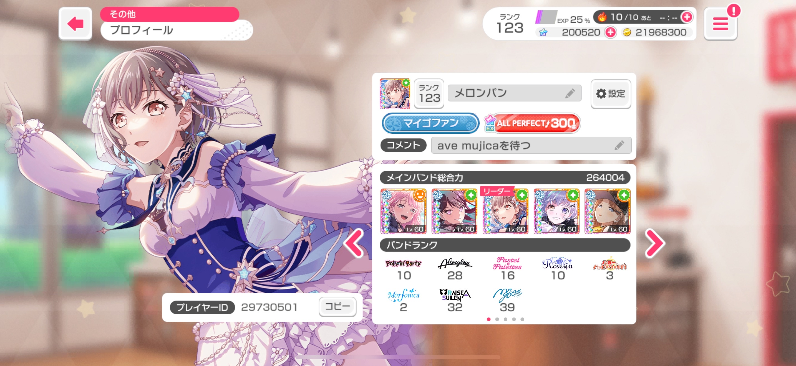
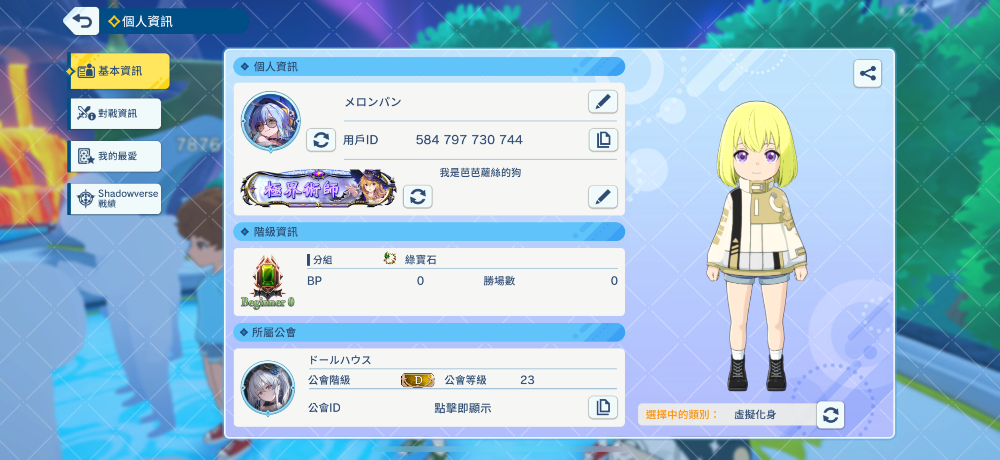
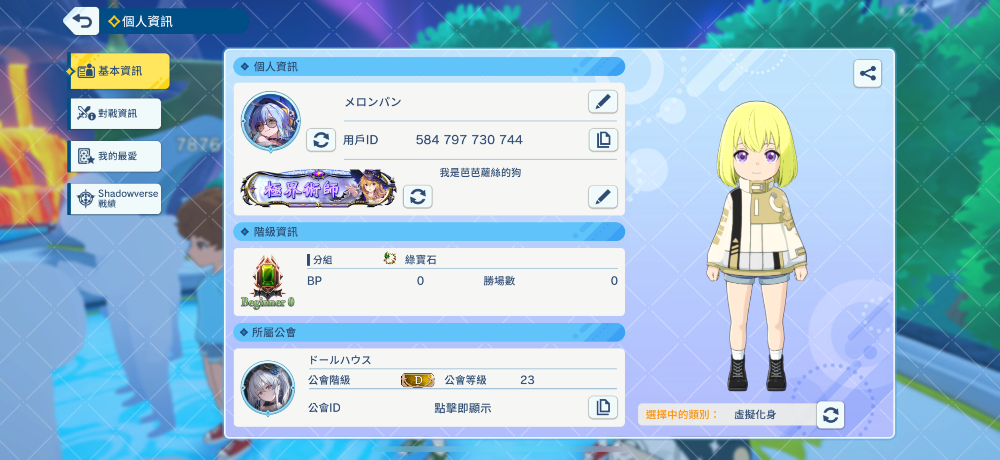

法式菠蘿麵包
暱稱｜雪球・菠蘿・自取
◇ 電波系 ★ 魔法廚 ○ 偶爾出沒的幽靈人口
—— 歡迎來到菠蘿麵包星 ——
一些小工具：
關鍵字/個版
ave mujica、崩鐵、ボカロ、日常
個版偏向日常、碎碎念，屬於淺水型，但常浮上來的情況也有
歡迎大家跟我互動！
喜好/習慣
- 重度拉麵愛好者，出門必吃拉麵
- 一言不合就出國，然後又想回家（矛盾）
- 熬夜兩天不睡覺（救命）
✨ 關於我 ｜ 菠蘿麵包
暱稱
我是菠蘿麵包，可以叫我麵包 / 菠蘿 / 雪球，只要讓我知道在叫我就行。
現為在逃社畜，出沒時間不一定，但通常白天一定會在。
性格
平常話不多，但如果遇到有相同興趣的人話就會變得比較健談。
會吐槽自己，是個怪人（欸）
活動範圍
座標台灣北部，時常跑場次（CWT、FF、PF 等）
個人風格
我的思考方式有點奇怪，所以常常會跳話題，有點電波系這樣（？）
但自認很好聊天（大概）
關於雷點
可能會雷到你的地方：
髒話（熟了之後）、表情符號（例如 🫶）、句尾波浪號（有時）、中國用語、不讀不回(嚴重)
回覆的速度有時快有時慢得感人，如果會介意的話請迴避
雷點：周邊說教人（巨雷）、瘋狂砍價人、一言不合免運人
坑單（2025/06/26 更新）
目前主坑
- ave mujica：會去看 LIVE、買周邊，基本上有活動都會去。
暫退關注中
-
崩鐵：已退遊戲，但仍有在關注新角色跟劇情。
-
プロセカ：已退遊戲，有感興趣的新活動會去看劇情。
- ARCAEA：光和對立終章後暫退遊戲，主要是沒時間玩，有出新曲會去看看譜面。
預計回坑
-
明日方舟：預計回坑，以陸服為主。
- 闇影詩章(1、2)：有玩一代。其實已經回坑，但，闇影詩章背叛了我.jpg
2025.6.26 初華生誕祭

遊戲ID｜歡迎加友


バンドリ日服ID：29730501

SV2 ID：584797730744